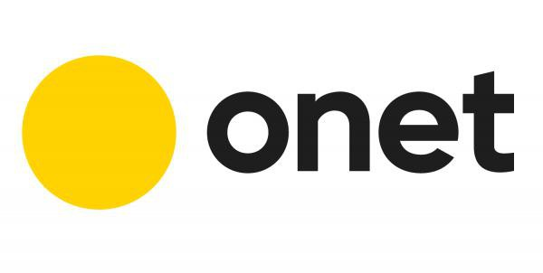
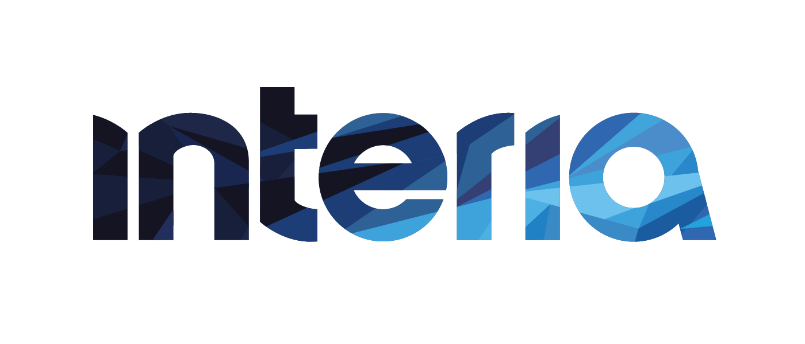

<!DOCTYPE html>
<html lang="pl" prefix="og: https://ogp.me/ns#">
<head>
<meta charset="UTF-8">
<meta name="viewport" content="width=device-width, initial-scale=1.0">

<!-- ═══════════════════════════════════════════════
     PODSTAWOWE META TAGI SEO
════════════════════════════════════════════════ -->
<title>Wirtualny Wskaźnik Wpływu — Wyniki Kwiecień 2026 | Wirtualne Media</title>
<meta name="description" content="Ranking polskich mediów cyfrowych — Wirtualny Wskaźnik Wpływu (WWW) za kwiecień 2026. TOP 122 wydawców wg 14 kategorii danych: ruch na stronie, social media, cytowania. Onet na #1, WP na #2.">
<meta name="keywords" content="Wirtualny Wskaźnik Wpływu, ranking mediów, polskie media cyfrowe, Wirtualne Media, ranking wydawców, media kwiecień 2026, Onet, Wirtualna Polska, Interia, social media ranking">
<meta name="author" content="Wirtualne Media">
<meta name="publisher" content="Wirtualne Media Sp. z o.o.">
<meta name="robots" content="index, follow, max-snippet:-1, max-image-preview:large, max-video-preview:-1">
<meta name="googlebot" content="index, follow">
<meta name="revisit-after" content="30 days">
<meta name="rating" content="general">
<meta name="language" content="Polish">
<meta name="geo.region" content="PL">
<meta name="geo.placename" content="Polska">
<link rel="canonical" href="https://www.wirtualnemedia.pl/wskaznik/kwiecien-2026">

<!-- ═══════════════════════════════════════════════
     OPEN GRAPH (Facebook, LinkedIn, Messenger)
════════════════════════════════════════════════ -->
<meta property="og:type" content="article">
<meta property="og:site_name" content="Wirtualne Media">
<meta property="og:title" content="Wirtualny Wskaźnik Wpływu — Wyniki Kwiecień 2026">
<meta property="og:description" content="Miesięczny ranking polskich mediów cyfrowych. TOP 122 wydawców wg 14 kategorii danych. Onet na #1 z wynikiem 48,59 pkt — wyprzedza Wirtualną Polskę o zaledwie 0,46 pkt.">
<meta property="og:url" content="https://www.wirtualnemedia.pl/wskaznik/kwiecien-2026">
<meta property="og:image" content="https://www.wirtualnemedia.pl/wskaznik/og-kwiecien-2026.jpg">
<meta property="og:image:width" content="1200">
<meta property="og:image:height" content="630">
<meta property="og:image:alt" content="Wirtualny Wskaźnik Wpływu — Ranking mediów cyfrowych kwiecień 2026">
<meta property="og:locale" content="pl_PL">
<meta property="article:published_time" content="2026-05-01T08:00:00+02:00">
<meta property="article:modified_time" content="2026-05-13T12:00:00+02:00">
<meta property="article:author" content="https://www.wirtualnemedia.pl">
<meta property="article:section" content="Rankingi">
<meta property="article:tag" content="ranking mediów">
<meta property="article:tag" content="Wirtualny Wskaźnik Wpływu">
<meta property="article:tag" content="polskie media cyfrowe">

<!-- ═══════════════════════════════════════════════
     TWITTER / X CARDS
════════════════════════════════════════════════ -->
<meta name="twitter:card" content="summary_large_image">
<meta name="twitter:site" content="@wirtualnemedia">
<meta name="twitter:creator" content="@wirtualnemedia">
<meta name="twitter:title" content="Wirtualny Wskaźnik Wpływu — Wyniki Kwiecień 2026">
<meta name="twitter:description" content="Miesięczny ranking polskich mediów cyfrowych. TOP 122 wydawców. Onet #1 · WP #2 · Interia #3. Sprawdź kto zyskał, a kto stracił.">
<meta name="twitter:image" content="https://www.wirtualnemedia.pl/wskaznik/og-kwiecien-2026.jpg">
<meta name="twitter:image:alt" content="Wirtualny Wskaźnik Wpływu — ranking mediów kwiecień 2026">

<!-- ═══════════════════════════════════════════════
     SCHEMA.ORG — JSON-LD STRUCTURED DATA
════════════════════════════════════════════════ -->
<script type="application/ld+json">
{
  "@context": "https://schema.org",
  "@graph": [
    {
      "@type": "WebPage",
      "@id": "https://www.wirtualnemedia.pl/wskaznik/kwiecien-2026",
      "url": "https://www.wirtualnemedia.pl/wskaznik/kwiecien-2026",
      "name": "Wirtualny Wskaźnik Wpływu — Wyniki Kwiecień 2026",
      "description": "Ranking polskich mediów cyfrowych za kwiecień 2026. TOP 122 wydawców wg 14 kategorii danych.",
      "inLanguage": "pl",
      "isPartOf": { "@id": "https://www.wirtualnemedia.pl/#website" },
      "datePublished": "2026-05-01T08:00:00+02:00",
      "dateModified": "2026-05-13T12:00:00+02:00",
      "breadcrumb": { "@id": "https://www.wirtualnemedia.pl/wskaznik/kwiecien-2026#breadcrumb" },
      "potentialAction": {
        "@type": "ReadAction",
        "target": "https://www.wirtualnemedia.pl/wskaznik/kwiecien-2026"
      }
    },
    {
      "@type": "Article",
      "@id": "https://www.wirtualnemedia.pl/wskaznik/kwiecien-2026#article",
      "headline": "Wirtualny Wskaźnik Wpływu — Wyniki Kwiecień 2026",
      "description": "Miesięczny ranking polskich mediów cyfrowych. TOP 122 wydawców wg 14 kategorii danych: ruch na stronie, social media, cytowania.",
      "url": "https://www.wirtualnemedia.pl/wskaznik/kwiecien-2026",
      "inLanguage": "pl",
      "datePublished": "2026-05-01T08:00:00+02:00",
      "dateModified": "2026-05-13T12:00:00+02:00",
      "author": {
        "@type": "Organization",
        "name": "Wirtualne Media",
        "url": "https://www.wirtualnemedia.pl"
      },
      "publisher": {
        "@type": "Organization",
        "@id": "https://www.wirtualnemedia.pl/#organization",
        "name": "Wirtualne Media",
        "url": "https://www.wirtualnemedia.pl",
        "logo": {
          "@type": "ImageObject",
          "url": "https://www.wirtualnemedia.pl/logo.png",
          "width": 200,
          "height": 60
        }
      },
      "image": {
        "@type": "ImageObject",
        "url": "https://www.wirtualnemedia.pl/wskaznik/og-kwiecien-2026.jpg",
        "width": 1200,
        "height": 630
      },
      "articleSection": "Rankingi",
      "keywords": "Wirtualny Wskaźnik Wpływu, ranking mediów, polskie media cyfrowe, kwiecień 2026",
      "isPartOf": { "@id": "https://www.wirtualnemedia.pl/#website" }
    },
    {
      "@type": "WebSite",
      "@id": "https://www.wirtualnemedia.pl/#website",
      "url": "https://www.wirtualnemedia.pl",
      "name": "Wirtualne Media",
      "description": "Serwis o polskim rynku mediów",
      "inLanguage": "pl",
      "publisher": { "@id": "https://www.wirtualnemedia.pl/#organization" },
      "potentialAction": {
        "@type": "SearchAction",
        "target": {
          "@type": "EntryPoint",
          "urlTemplate": "https://www.wirtualnemedia.pl/szukaj?q={search_term_string}"
        },
        "query-input": "required name=search_term_string"
      }
    },
    {
      "@type": "Organization",
      "@id": "https://www.wirtualnemedia.pl/#organization",
      "name": "Wirtualne Media",
      "url": "https://www.wirtualnemedia.pl",
      "logo": {
        "@type": "ImageObject",
        "url": "https://www.wirtualnemedia.pl/logo.png"
      },
      "sameAs": [
        "https://twitter.com/wirtualnemedia",
        "https://www.facebook.com/wirtualnemedia",
        "https://www.linkedin.com/company/wirtualnemedia"
      ]
    },
    {
      "@type": "BreadcrumbList",
      "@id": "https://www.wirtualnemedia.pl/wskaznik/kwiecien-2026#breadcrumb",
      "itemListElement": [
        {
          "@type": "ListItem",
          "position": 1,
          "name": "Strona główna",
          "item": "https://www.wirtualnemedia.pl"
        },
        {
          "@type": "ListItem",
          "position": 2,
          "name": "Wirtualny Wskaźnik Wpływu",
          "item": "https://www.wirtualnemedia.pl/wskaznik"
        },
        {
          "@type": "ListItem",
          "position": 3,
          "name": "Wyniki Kwiecień 2026",
          "item": "https://www.wirtualnemedia.pl/wskaznik/kwiecien-2026"
        }
      ]
    },
    {
      "@type": "Dataset",
      "name": "Wirtualny Wskaźnik Wpływu — Kwiecień 2026",
      "description": "Ranking 122 polskich mediów cyfrowych według 14 kategorii danych za kwiecień 2026.",
      "url": "https://www.wirtualnemedia.pl/wskaznik/kwiecien-2026",
      "publisher": { "@id": "https://www.wirtualnemedia.pl/#organization" },
      "temporalCoverage": "2026-04",
      "spatialCoverage": "PL",
      "inLanguage": "pl",
      "license": "https://www.wirtualnemedia.pl/regulamin",
      "measurementTechnique": "Dane z Mediapanel, Social Blade, Sotrender, Mediaboard",
      "variableMeasured": [
        "Realni użytkownicy", "Odsłony WWW", "Cytowania",
        "Facebook interakcje", "YouTube odsłony", "TikTok interakcje"
      ]
    }
  ]
}
</script>

<!-- ═══════════════════════════════════════════════
     WYDAJNOŚĆ — PRECONNECT / PRELOAD
════════════════════════════════════════════════ -->
<link rel="preconnect" href="https://fonts.googleapis.com">
<link rel="preconnect" href="https://fonts.gstatic.com" crossorigin="anonymous">
<link rel="dns-prefetch" href="https://unpkg.com">
<link rel="dns-prefetch" href="https://www.wirtualnemedia.pl">
<link rel="preload" href="https://fonts.googleapis.com/css2?family=Barlow:wght@300;400;500;600;700;800&family=Barlow+Condensed:wght@500;600;700;800&display=swap" as="style">

<!-- ═══════════════════════════════════════════════
     FAVICONS / IKONY APLIKACJI
════════════════════════════════════════════════ -->
<link rel="icon" type="image/png" sizes="32x32" href="https://www.wirtualnemedia.pl/favicon-32x32.png">
<link rel="icon" type="image/png" sizes="16x16" href="https://www.wirtualnemedia.pl/favicon-16x16.png">
<link rel="apple-touch-icon" sizes="180x180" href="https://www.wirtualnemedia.pl/apple-touch-icon.png">
<meta name="theme-color" content="#0D1B2A">
<meta name="msapplication-TileColor" content="#0D1B2A">

<!-- ═══════════════════════════════════════════════
     HREFLANG — JĘZYKI (tylko PL na razie)
════════════════════════════════════════════════ -->
<link rel="alternate" hreflang="pl" href="https://www.wirtualnemedia.pl/wskaznik/kwiecien-2026">
<link rel="alternate" hreflang="x-default" href="https://www.wirtualnemedia.pl/wskaznik/kwiecien-2026">

<!-- ═══════════════════════════════════════════════
     POPRZEDNI / NASTĘPNY NUMER (SEO PAGINACJA)
════════════════════════════════════════════════ -->
<link rel="prev" href="https://www.wirtualnemedia.pl/wskaznik/marzec-2026">

<!-- FONTY -->
<link href="https://fonts.googleapis.com/css2?family=Barlow:wght@300;400;500;600;700;800&family=Barlow+Condensed:wght@500;600;700;800&display=swap" rel="stylesheet">
<script src="https://unpkg.com/react@18.3.1/umd/react.development.js" integrity="sha384-hD6/rw4ppMLGNu3tX5cjIb+uRZ7UkRJ6BPkLpg4hAu/6onKUg4lLsHAs9EBPT82L" crossorigin="anonymous"></script>
<script src="https://unpkg.com/react-dom@18.3.1/umd/react-dom.development.js" integrity="sha384-u6aeetuaXnQ38mYT8rp6sbXaQe3NL9t+IBXmnYxwkUI2Hw4bsp2Wvmx4yRQF1uAm" crossorigin="anonymous"></script>
<script src="https://unpkg.com/@babel/standalone@7.29.0/babel.min.js" integrity="sha384-m08KidiNqLdpJqLq95G/LEi8Qvjl/xUYll3QILypMoQ65QorJ9Lvtp2RXYGBFj1y" crossorigin="anonymous"></script>
<style>
:root {
  --bg: #F4F4F5; --surface: #ffffff; --surface2: #F9F9FA;
  --nav: #0D1B2A; --border: #E0E0E0; --border-strong: #CBD0D8;
  --orange: #F05A28; --orange-hover: #C94316; --orange-dim: rgba(240,90,40,0.10); --orange-dim2: rgba(240,90,40,0.06);
  --text: #111111; --text2: #555555; --text3: #8A9AAB;
  --green: #16A34A; --green-dim: rgba(22,163,74,0.12);
  --red: #DC2626; --red-dim: rgba(220,38,38,0.10);
  --gold: #B45309; --shadow: 0 1px 4px rgba(0,0,0,0.08), 0 4px 16px rgba(0,0,0,0.05);
  --shadow-lg: 0 4px 24px rgba(0,0,0,0.10);
}
[data-dark] {
  --bg: #070d17; --surface: #0c1525; --surface2: #101d32;
  --nav: #040b14; --border: #182d4a; --border-strong: #243f5e;
  --orange: #F05A28; --orange-hover: #ff7347; --orange-dim: rgba(240,90,40,0.14); --orange-dim2: rgba(240,90,40,0.06);
  --text: #e4eaf2; --text2: #7a9ab8; --text3: #3d6080;
  --green: #34d399; --green-dim: rgba(52,211,153,0.14);
  --red: #f87171; --red-dim: rgba(248,113,113,0.12);
  --gold: #fbbf24; --shadow: 0 2px 12px rgba(0,0,0,0.30);
  --shadow-lg: 0 8px 32px rgba(0,0,0,0.40);
}
*, *::before, *::after { box-sizing: border-box; margin: 0; padding: 0; }
html { scroll-behavior: smooth; }
body { background: var(--bg); color: var(--text); font-family: 'Barlow', sans-serif; line-height: 1.55; -webkit-font-smoothing: antialiased; transition: background 0.3s, color 0.3s; }
a { color: inherit; text-decoration: none; }
button { font-family: 'Barlow', sans-serif; cursor: pointer; border: none; background: none; }

/* NAV */
.nav-top { background: var(--nav); height: 52px; display: flex; align-items: center; padding: 0 24px; gap: 16px; position: sticky; top: 0; z-index: 100; }
.nav-logo { display: flex; align-items: center; gap: 10px; margin-right: auto; }
.nav-logo svg { height: 28px; }
.nav-pill { font-size: 11px; font-weight: 700; letter-spacing: 0.06em; text-transform: uppercase; color: rgba(255,255,255,0.7); border: 1.5px solid rgba(255,255,255,0.18); border-radius: 4px; padding: 4px 10px; transition: color 0.15s, border-color 0.15s; }
.nav-pill:hover { color: #fff; border-color: rgba(255,255,255,0.4); }
.nav-cta { background: var(--orange); color: #fff; font-size: 12px; font-weight: 700; border-radius: 9999px; padding: 6px 16px; letter-spacing: 0.04em; transition: background 0.15s; }
.nav-cta:hover { background: var(--orange-hover); }
.nav-cat { background: var(--surface); border-bottom: 1px solid var(--border); height: 40px; display: flex; align-items: stretch; padding: 0 24px; overflow-x: auto; scrollbar-width: none; }
.nav-cat::-webkit-scrollbar { display: none; }
.nav-cat a { font-size: 12px; font-weight: 600; color: var(--text2); padding: 0 14px; display: flex; align-items: center; border-bottom: 2px solid transparent; white-space: nowrap; transition: color 0.15s, border-color 0.15s; }
.nav-cat a:hover, .nav-cat a.active { color: var(--orange); border-bottom-color: var(--orange); }

/* LAYOUT */
.wrap { max-width: 860px; margin: 0 auto; padding: 0 24px; }
.section { padding: 56px 0; border-bottom: 1px solid var(--border); }
.section:last-of-type { border-bottom: none; }
.section-label { font-size: 11px; font-weight: 700; letter-spacing: 0.12em; text-transform: uppercase; color: var(--orange); margin-bottom: 20px; display: flex; align-items: center; gap: 8px; }
.section-label::before { content: ''; width: 20px; height: 2px; background: var(--orange); display: inline-block; flex-shrink: 0; }

/* HERO */
.hero { background: var(--nav); color: #fff; padding: 56px 0 48px; position: relative; overflow: hidden; }
.hero::after { content: 'WWW'; position: absolute; right: 24px; top: 50%; transform: translateY(-50%); font-family: 'Barlow Condensed', sans-serif; font-size: 220px; font-weight: 800; color: rgba(240,90,40,0.04); pointer-events: none; letter-spacing: -8px; line-height: 1; }
.hero-top { display: flex; align-items: flex-start; justify-content: space-between; gap: 16px; margin-bottom: 28px; }
.hero-badge { font-size: 11px; font-weight: 700; letter-spacing: 0.12em; text-transform: uppercase; color: var(--orange); margin-bottom: 12px; }
.hero-title { font-family: 'Barlow Condensed', sans-serif; font-size: clamp(40px, 6vw, 72px); font-weight: 800; line-height: 0.95; letter-spacing: -1px; }
.hero-title span { color: var(--orange); }
.hero-stats { display: grid; grid-template-columns: repeat(4, 1fr); gap: 24px; margin-top: 36px; padding-top: 28px; border-top: 1px solid rgba(255,255,255,0.10); }
.hstat-val { font-family: 'Barlow Condensed', sans-serif; font-size: 26px; font-weight: 800; color: var(--orange); letter-spacing: -0.5px; }
.hstat-lbl { font-size: 11px; color: rgba(255,255,255,0.45); margin-top: 3px; line-height: 1.3; }

/* PODIUM */
.podium { display: grid; grid-template-columns: 1fr 1.1fr 1fr; gap: 12px; align-items: end; }
.podium-card { background: var(--surface); border: 1px solid var(--border); padding: 24px 20px 20px; text-align: center; transition: box-shadow 0.2s, transform 0.2s; position: relative; }
.podium-card:hover { transform: translateY(-3px); box-shadow: var(--shadow-lg); }
.podium-card.p1 { padding: 32px 24px 24px; border-color: var(--orange); }
.podium-card.p1::before { content: ''; position: absolute; top: 0; left: 0; right: 0; height: 3px; background: var(--orange); }
.podium-rank { font-family: 'Barlow Condensed', sans-serif; font-size: 52px; font-weight: 800; line-height: 1; margin-bottom: 12px; color: var(--border-strong); }
.p1 .podium-rank { color: var(--orange); font-size: 64px; }
.p2 .podium-rank { color: var(--gold); font-size: 56px; }
.podium-name { font-size: 16px; font-weight: 700; margin-bottom: 3px; color: var(--text); }
.p1 .podium-name { font-size: 20px; }
.podium-logo { height: 28px; max-width: 80%; object-fit: contain; margin: 0 auto 6px; display: block; }
.p1 .podium-logo { height: 36px; }
.podium-org { font-size: 11px; color: var(--text3); margin-bottom: 14px; }
.podium-score { font-family: 'Barlow Condensed', sans-serif; font-size: 30px; font-weight: 800; color: var(--text); }
.p1 .podium-score { font-size: 40px; color: var(--orange); }
.podium-bar { height: 3px; background: var(--border); margin: 10px 0; border-radius: 2px; overflow: hidden; }
.podium-bar-fill { height: 100%; background: var(--orange); border-radius: 2px; }
.podium-change { display: inline-block; font-size: 11px; font-weight: 700; padding: 2px 8px; border-radius: 3px; margin-top: 8px; }
.ch-up { background: var(--green-dim); color: var(--green); }
.ch-down { background: var(--red-dim); color: var(--red); }
.ch-same { color: var(--text3); }
.podium-note { font-size: 12px; color: var(--text2); text-align: center; margin-top: 16px; padding: 12px 16px; background: var(--orange-dim2); border-left: 3px solid var(--orange); }

/* EVENT BOX */
.event-box { background: var(--surface); border: 1px solid var(--orange); padding: 28px 32px; position: relative; }
.event-tag { position: absolute; top: -11px; left: 24px; background: var(--orange); color: #fff; font-size: 10px; font-weight: 700; letter-spacing: 0.1em; text-transform: uppercase; padding: 3px 12px; }
.event-grid { display: grid; grid-template-columns: auto 1fr; gap: 32px; align-items: center; margin-top: 8px; }
.event-num { font-family: 'Barlow Condensed', sans-serif; font-size: 72px; font-weight: 800; color: var(--orange); line-height: 1; }
.event-num-lbl { font-size: 11px; color: var(--text3); text-align: center; margin-top: 2px; }
.event-title { font-size: 22px; font-weight: 700; margin-bottom: 10px; line-height: 1.2; }
.event-desc { font-size: 14px; color: var(--text2); line-height: 1.7; }
.event-desc strong { color: var(--orange); font-weight: 600; }

/* INSIGHTS GRID */
.insights { display: grid; grid-template-columns: repeat(auto-fill, minmax(260px, 1fr)); gap: 14px; }
.insight-card { background: var(--surface); border: 1px solid var(--border); padding: 22px; transition: border-color 0.2s, box-shadow 0.2s; }
.insight-card:hover { border-color: var(--orange); box-shadow: var(--shadow); }
.insight-num { font-size: 11px; font-weight: 700; letter-spacing: 0.1em; color: var(--orange); margin-bottom: 8px; }
.insight-title { font-size: 15px; font-weight: 700; line-height: 1.3; margin-bottom: 8px; }
.insight-body { font-size: 13px; color: var(--text2); line-height: 1.7; }
.insight-body strong { color: var(--text); font-weight: 600; }

/* CATEGORY LEADERS */
.cat-leaders { display: flex; flex-direction: column; gap: 10px; }
.cat-row { display: grid; grid-template-columns: 110px 1fr 100px; align-items: center; gap: 16px; }
.cat-label { font-size: 12px; font-weight: 600; color: var(--text2); text-align: right; }
.cat-bar-wrap { height: 32px; background: var(--surface2); border: 1px solid var(--border); overflow: visible; position: relative; }
.cat-bar-fill { height: 100%; display: flex; align-items: center; padding-left: 12px; padding-right: 12px; font-size: 12px; font-weight: 700; color: #fff; white-space: nowrap; transition: width 0.8s ease; min-width: fit-content; box-shadow: 2px 0 0 0 rgba(0,0,0,0.06); }
.cat-meta { font-size: 11px; font-weight: 600; color: var(--text); line-height: 1.3; }

/* MOVERS */
.movers-grid { display: grid; grid-template-columns: 1fr 1fr; gap: 20px; }
.movers-title { font-size: 11px; font-weight: 700; letter-spacing: 0.1em; text-transform: uppercase; padding-bottom: 8px; margin-bottom: 10px; border-bottom: 2px solid; }
.movers-title.up { color: var(--green); border-color: var(--green); }
.movers-title.dn { color: var(--red); border-color: var(--red); }
.mover-row { display: flex; align-items: center; gap: 12px; padding: 10px 14px; background: var(--surface); border: 1px solid var(--border); margin-bottom: 6px; transition: border-color 0.15s; }
.mover-row:hover { border-color: var(--border-strong); }
.mover-delta { font-family: 'Barlow Condensed', sans-serif; font-size: 16px; font-weight: 700; min-width: 36px; text-align: center; }
.mover-delta.up { color: var(--green); }
.mover-delta.dn { color: var(--red); }
.mover-name { font-size: 13px; font-weight: 700; }
.mover-cat { font-size: 10px; color: var(--text3); }
.mover-pos { margin-left: auto; font-size: 12px; color: var(--text2); font-weight: 600; }

/* TABS */
.tabs-nav { display: flex; overflow-x: auto; gap: 4px; padding-bottom: 1px; scrollbar-width: none; border-bottom: 2px solid var(--border); }
.tabs-nav::-webkit-scrollbar { display: none; }
.tab-btn { font-size: 12px; font-weight: 600; padding: 8px 16px; color: var(--text2); white-space: nowrap; flex-shrink: 0; border-bottom: 2px solid transparent; margin-bottom: -2px; transition: color 0.15s, border-color 0.15s; }
.tab-btn:hover { color: var(--text); }
.tab-btn.active { color: var(--orange); border-bottom-color: var(--orange); }
.tab-panel { display: none; margin-top: 16px; }
.tab-panel.active { display: block; }

/* TABLES */
.table-scroll { overflow-x: auto; -webkit-overflow-scrolling: touch; }
.rank-table { width: 100%; border-collapse: collapse; min-width: 340px; }
.rank-table th { font-size: 10px; font-weight: 700; letter-spacing: 0.1em; text-transform: uppercase; color: var(--text3); padding: 8px 12px; text-align: left; background: var(--surface2); border-bottom: 2px solid var(--border); }
.rank-table th:last-child { text-align: right; }
.rank-table th.tc { text-align: center; }
.rank-table td { padding: 8px 12px; font-size: 13px; border-bottom: 1px solid var(--border); }
.rank-table td.nm { padding-right: 24px; }
.rank-table td.sc, .rank-table th:nth-last-child(2), .rank-table th:last-child { white-space: nowrap; }
.rank-table tr:last-child td { border-bottom: none; }
.rank-table tr:hover td { background: var(--orange-dim2); }
.rank-table tbody tr:nth-child(1) .rk { color: var(--orange); font-weight: 800; }
.rank-table tbody tr:nth-child(2) .rk { color: var(--gold); font-weight: 700; }
.rank-table tbody tr:nth-child(3) .rk { color: var(--text2); font-weight: 700; }
.rk { font-family: 'Barlow Condensed', sans-serif; font-size: 14px; font-weight: 600; color: var(--text3); width: 36px; }
.nm { font-weight: 600; color: var(--text); }
.sc { font-family: 'Barlow Condensed', sans-serif; font-size: 14px; font-weight: 700; text-align: right; width: 1%; padding-left: 4px; padding-right: 8px; }
.pct { font-family: 'Barlow Condensed', sans-serif; font-size: 14px; font-weight: 700; color: var(--text2); text-align: right; width: 1%; padding-left: 12px; }
.ch { font-size: 11px; font-weight: 700; text-align: center; width: 48px; }
.ch.up { color: var(--green); }
.ch.dn { color: var(--red); }
.ch.eq { color: var(--text3); }
.data-src { font-size: 11px; color: var(--text3); text-align: right; margin-top: 6px; }

/* Q&A */
.qa-list { }
.qa-item { border-top: 1px solid var(--border); padding: 18px 0; }
.qa-item:first-child { border-top: none; }
.qa-q { font-size: 14px; font-weight: 700; margin-bottom: 8px; display: flex; gap: 12px; align-items: flex-start; }
.qa-num { min-width: 24px; height: 24px; background: var(--orange); color: #fff; font-size: 11px; font-weight: 700; display: flex; align-items: center; justify-content: center; flex-shrink: 0; margin-top: 1px; }
.qa-a { font-size: 13px; color: var(--text2); line-height: 1.75; padding-left: 36px; }
.qa-a strong { color: var(--text); font-weight: 600; }

/* BRAND LIST */
.brand-list { font-size: 12px; color: var(--text2); line-height: 1.8; }

/* FOOTER */
.footer { padding: 32px 0 48px; display: flex; align-items: center; justify-content: space-between; flex-wrap: wrap; gap: 12px; }
.footer-brand { font-size: 11px; font-weight: 700; letter-spacing: 0.08em; text-transform: uppercase; color: var(--text2); }
.footer-src { font-size: 10px; color: var(--text3); letter-spacing: 0.06em; text-transform: uppercase; }

/* TWEAKS PANEL */
.tweaks-panel { position: fixed; bottom: 20px; right: 20px; background: var(--surface); border: 1px solid var(--border); box-shadow: var(--shadow-lg); padding: 20px; width: 240px; z-index: 200; display: none; }
.tweaks-panel.visible { display: block; }
.tweaks-title { font-size: 12px; font-weight: 700; letter-spacing: 0.08em; text-transform: uppercase; color: var(--text); margin-bottom: 16px; display: flex; justify-content: space-between; align-items: center; }
.tweaks-close { font-size: 18px; color: var(--text3); cursor: pointer; }
.tw-label { font-size: 11px; font-weight: 600; color: var(--text2); margin-bottom: 6px; }
.tw-row { display: flex; gap: 6px; margin-bottom: 14px; }
.tw-opt { flex: 1; padding: 7px; font-size: 11px; font-weight: 600; text-align: center; border: 1.5px solid var(--border); color: var(--text2); cursor: pointer; transition: all 0.15s; }
.tw-opt.active, .tw-opt:hover { border-color: var(--orange); color: var(--orange); background: var(--orange-dim); }

@media (max-width: 700px) {
  .hero-stats { grid-template-columns: repeat(2,1fr); gap: 16px; }
  .podium { grid-template-columns: 1fr; }
  .p1 { order: -1; }
  .event-grid { grid-template-columns: 1fr; gap: 12px; text-align: center; }
  .cat-row { grid-template-columns: 70px 1fr 60px; gap: 6px; }
  .cat-label { font-size: 10px; }
  .cat-bar-fill { font-size: 10px; padding-left: 8px; }
  .movers-grid { grid-template-columns: 1fr; }
  .hero-top { flex-wrap: wrap; }
  .wrap { padding: 0 14px; }
  .section { padding: 36px 0; }
  .rank-table td { padding: 7px 8px; font-size: 12px; }
  .rank-table th { padding: 7px 8px; font-size: 9px; }
  .rk { width: 24px; font-size: 12px; }
  .ch { width: 36px; font-size: 10px; }
  .sc { font-size: 13px; }
  .tabs-nav { gap: 2px; }
  .tab-btn { font-size: 11px; padding: 7px 10px; }
  .insights { grid-template-columns: 1fr; }
  .event-num { font-size: 48px; }
  .hero-title { font-size: 38px; }
  .hstat-val { font-size: 22px; }
}
</style>
</head>
<body>
<div id="root"></div>
<script type="text/babel">


// ── DATA ───────────────────────────────────────────────────────────────────
const TOP = [
[1, "Wirtualna Polska", 1, 49.2],
[2, "Onet", -1, 46.38],
[3, "Interia", 0, 35.6],
[4, "TVN24", 1, 23.46],
[5, "TVP", -1, 23.42],
[6, "Kanał Zero", 2, 21.3],
[7, "Goniec", 0, 19.79],
[8, "Super Express", -2, 19.77],
[9, "Polsat", 0, 18.53],
[10, "Fakt", 0, 18.16],
[11, "Gazeta.pl", 0, 16.62],
[12, "RMF FM", 0, 16.48],
[13, "Polsat News", 0, 16.37],
[14, "Radio Zet", 11, 16.19],
[15, "TVN", -1, 15.78],
[16, "Meczyki", -1, 15.73],
[17, "Gazeta Wyborcza", -1, 14.68],
[18, "TV Republika", 0, 14.61],
[19, "O2", -2, 14.09],
[20, "Radio Eska", 0, 13.47],
[21, "Filmweb", 1, 12.7],
[22, "Rzeczpospolita", 1, 12.4],
[23, "TVP Info", -4, 12.25],
[24, "Business Insider", 0, 11.79],
[25, "RMF24", -4, 11.46],
[26, "Infor", 0, 10.88],
[27, "Money", 0, 10.54],
[28, "Pudelek", 0, 10.34],
[29, "Sport.pl", 6, 9.93],
[30, "Portal Samorządowy", 8, 9.7],
[31, "Polsat Sport", -2, 9.23],
[32, "Nasze Miasto", 1, 9.12],
[33, "Wprost", -3, 9.12],
[34, "Pomponik", -3, 9.02],
[35, "Świat Gwiazd", 2, 8.84],
[36, "Dziennik.pl", -2, 8.71],
[37, "Rynek Zdrowia", -1, 8.64],
[38, "Forsal", -6, 8.63],
[39, "WNP", 8, 8.51],
[40, "Plejada", 1, 8.38],
[41, "Bankier", -2, 8.32],
[42, "Medonet", 0, 8.29],
[43, "Kozaczek", 2, 8.11],
[44, "Kanał Sportowy", -1, 7.96],
[45, "TOK FM", -1, 7.61],
[46, "naTemat", 2, 7.42],
[47, "Polskie Radio24", -7, 7.37],
[48, "Party", 6, 7.35],
[49, "Polki", -3, 7.17],
[50, "Polskie Radio", 1, 6.94],
[51, "Dziennik Gazeta Prawna", -2, 6.81],
[52, "Gazeta Pomorska", 6, 6.62],
[53, "Plotek", -3, 6.62],
[54, "Weszło", 14, 6.59],
[55, "Pyszności", -2, 6.38],
[56, "Jastrząb Post", -4, 6.34],
[57, "Biznes Info", 16, 6.26],
[58, "Dziennik Zachodni", 1, 6.21],
[59, "Ofeminin", -4, 6.15],
[60, "Viva", 12, 5.89],
[61, "Trójmiasto", 3, 5.89],
[62, "Spiders Web", -5, 5.87],
[63, "Do Rzeczy", -7, 5.86],
[64, "Vogue", 1, 5.75],
[65, "Niezależna", 1, 5.49],
[66, "Gry Online", 1, 5.43],
[67, "Zwierciadło", 11, 5.42],
[68, "Komputer Świat", -5, 5.35],
[69, "Kobieta.pl", 2, 5.35],
[70, "Gazeta Wrocławska", 7, 5.34],
[71, "Transfery.info", 4, 5.31],
[72, "W Polsce24", -12, 5.29],
[73, "Newsweek", -12, 5.25],
[74, "Wizaż", 5, 5.21],
[75, "OKO.press", -13, 5.2],
[76, "Glamour", 0, 5.2],
[77, "National Geographic", 0, 5.15],
[78, "Wirtualnemedia", -8, 5.12],
[79, "Dla Handlu", 1, 5.06],
[80, "Głos Wielkopolski", 3, 5.01],
[81, "Telepolis", -7, 4.99],
[82, "Elle", -13, 4.94],
[83, "Lubimy Czytać", 8, 4.74],
[84, "Epoznań", 6, 4.68],
[85, "Gazeta Krakowska", -3, 4.67],
[86, "W Polityce", 0, 4.66],
[87, "Medycyna Praktyczna", -6, 4.58],
[88, "Puls Biznesu", 0, 4.54],
[89, "Dziennik Bałtycki", -2, 4.51],
[90, "Nowości", 4, 4.49],
[91, "Głos Szczeciński", 6, 4.47],
[92, "Gol24", 9, 4.41],
[93, "Warszawa w Pigułce", 5, 4.39],
[94, "Antyweb", 9, 4.3],
[95, "Defence24", -11, 4.27],
[96, "Android.com.pl", 4, 4.26],
[97, "Miejski Reporter", 5, 4.2],
[98, "Na Ekranie", -3, 4.2],
[99, "Polityka", 8, 4.17],
[100, "PPE", -11, 4.17],
[101, "Express Bydgoski", -5, 4.16],
[102, "Wysokie Obcasy", -10, 4.15],
[103, "90minut", 2, 4.14],
[104, "Głos Koszaliński", 2, 4.09],
[105, "Nowiny24", -6, 4.07],
[106, "Express Ilustrowany", 4, 4.05],
[107, "Forbes", -22, 4.03],
[108, "Dobreprogramy", -15, 3.95],
[109, "Gsmmaniak", 2, 3.93],
[110, "Pacjenci", 4, 3.88],
[111, "Donald.pl", -7, 3.86],
[112, "Dziennik Łódzki", -4, 3.79],
[113, "Benchmark", -4, 3.66],
[114, "Krytyka Polityczna", 2, 3.57],
[115, "IT Hardware", -3, 3.46],
[116, "Bezprawnik", -3, 3.22],
[117, "newonce", 2, 3.38],
[118, "Chip", 0, 3.12],
[119, "Tabletowo", -2, 3.11],
[120, "XYZ", 0, 3.02],
[121, "Parkiet", 0, 3],
[122, "Niebezpiecznik", 0, 2.95],
[123, "Smakosze", -8, 2.74]];


const CATS = {
  informacje: [["Wirtualna Polska", 1, 49.2], ["Onet", -1, 46.38], ["Interia", 0, 35.6], ["TVN24", 0, 23.46], ["Kanał Zero", 2, 21.3], ["Goniec", 0, 19.79], ["Super Express", -2, 19.77], ["Fakt", 0, 18.16], ["Gazeta.pl", 0, 16.62], ["RMF FM", 0, 16.48]],
  sport: [["TVP Sport", 0, 20.03], ["Meczyki", 0, 15.73], ["canal+ sport", 7, 15.29], ["Przegląd Sportowy", -1, 14.66], ["WP SportoweFakty", -1, 10.76], ["Sport.pl", 2, 9.93], ["Polsat Sport", -2, 9.23], ["Kanał Sportowy", 1, 7.96], ["Weszło", 0, 6.59], ["Eurosport Polska", -3, 6.24]],
  biznes: [["Business Insider", 0, 11.79], ["Infor", 0, 10.88], ["Money", 0, 10.54], ["Forsal", 0, 8.63], ["WNP", 1, 8.51], ["Bankier", -1, 8.32], ["Gazeta Prawna", 0, 6.81], ["Biznes Info", 1, 6.26], ["Wirtualnemedia", -1, 5.12], ["Dla Handlu", 0, 5.06]],
  rozrywka: [["Filmweb", 0, 12.7], ["Pudelek", 0, 10.34], ["Pomponik", 0, 9.02], ["Świat Gwiazd", 0, 8.84], ["Plejada", 0, 8.38], ["Kozaczek", 0, 8.11], ["Party", 2, 7.35], ["Plotek", -1, 6.62], ["Jastrząb Post", -1, 6.34], ["Lubimy czytać", 0, 4.73]],
  lokalne: [["Nasze Miasto", 0, 9.12], ["Gazeta Pomorska", 0, 6.62], ["Dziennik Zachodni", 0, 6.21], ["Trójmiasto", 0, 5.89], ["Gazeta Wrocławska", 0, 5.34], ["Głos Wielkopolski", 1, 5.01], ["Epoznań", 2, 4.68], ["Gazeta Krakowska", -2, 4.67], ["Dziennik Bałtycki", -1, 4.51], ["Nowości", 0, 4.49]],
  tech: [["Spiders Web", 0, 5.87], ["Gry Online", 1, 5.42], ["Komputer Świat", -1, 5.35], ["Telepolis", 0, 4.99], ["Antyweb", 3, 4.3], ["Android.com.pl", 1, 4.26], ["PPE", -2, 4.17], ["Dobreprogramy", -2, 3.95], ["Gsmmaniak", 1, 3.93], ["Benchmark", -1, 3.66]],
  lifestyle: [["Polki", 0, 7.17], ["Ofeminin", 0, 6.15], ["Viva", 3, 5.89], ["Vogue", -1, 5.75], ["Zwierciadło", 3, 5.42], ["Kobieta", -1, 5.35], ["Wizaż", 2, 5.21], ["Glamour", -1, 5.2], ["National Geographic – (nowa pozycja)", 0, 5.15], ["Elle", -6, 4.94]]
};

const METRICS = {
  "Realni użytkownicy": { src: "Mediapanel", data: [["Wirtualna Polska", "14 878 242", 100], ["Interia", "14 811 822", 99.55], ["Onet", "14 266 044", 95.89], ["Gazeta.pl", "", 53.66], ["TVN24", "", 48.64], ["Fakt", "", 48.11], ["Filmweb", "", 46.59], ["Infor", "", 46.26], ["O2", "", 43.96], ["TVP", "", 43.42], ["Super Express", "", 42.59], ["Business Insider", "", 41.68], ["RMF FM", "", 40.73], ["RMF24", "", 38.36], ["Gazeta Wyborcza", "", 37.7], ["Portal Samorządowy", "", 37.62], ["Nasze Miasto", "", 37.51], ["Forsal", "", 34.57], ["Wprost", "", 34.1], ["Money", "", 33.12], ["Dziennik", "", 32.97], ["Rynek Zdrowia", "", 32.28], ["Polsat News", "", 31.75], ["WNP", "", 31.53], ["Rzeczpospolita", "", 30.48], ["Medonet", "", 30.09], ["Pomponik", "", 29.76], ["Pudelek", "", 29.71], ["Sport.pl", "", 27.34]] },
  "Śr. dzienna RU": { src: "Mediapanel", data: [["Onet", "4 204 840", 100], ["Interia", "4 025 781", 95.74], ["Wirtualna Polska", "3 869 861", 92.03], ["O2", "", 32.02], ["Gazeta.pl", "", 28.33], ["TVN24", "", 27.27], ["Business Insider", "", 23.05], ["Fakt", "", 22.5], ["Gazeta Wyborcza", "", 18.8], ["RMF24", "", 18.5], ["TVP", "", 17.37], ["Filmweb", "", 15.72], ["RMF FM", "", 15.65], ["Infor", "", 15.21], ["Money", "", 15.1], ["Pudelek", "", 14.5], ["Super Express", "", 13.92], ["Sport.pl", "", 13.56], ["Portal Samorządowy", "", 13.26], ["Polsat News", "", 12.44], ["Pomponik", "", 12.41], ["Wprost", "", 11.94], ["Rynek Zdrowia", "", 11.66], ["Bankier", "", 10.57], ["Dziennik", "", 10.55], ["WNP", "", 10.45], ["Goniec", "", 10.43], ["Nasze Miasto", "", 10.02], ["Medonet", "", 9.75]] },
  "Odsłony WWW": { src: "Mediapanel", data: [["Onet", "1 393 631 171", 100], ["Interia", "1 055 509 038", 75.74], ["Wirtualna Polska", "860 373 738", 61.74], ["O2", "", 12.13], ["Gazeta.pl", "", 12.03], ["Filmweb", "", 11.19], ["TVP", "", 7.84], ["TVN24", "", 7.16], ["Fakt", "", 4.89], ["Pudelek", "", 4.72], ["Super Express", "", 4.48], ["RMF24", "", 3.93], ["Business Insider", "", 3.84], ["Nasze Miasto", "", 3.63], ["Bankier", "", 3.54], ["Dziennik", "", 3.3], ["Gazeta Wyborcza", "", 3.26], ["Polsat News", "", 3.21], ["Sport.pl", "", 3.01], ["Money", "", 2.91], ["RMF FM", "", 2.38], ["Trójmiasto", "", 2.11], ["Wprost", "", 2.09], ["Infor", "", 2.06], ["Pomponik", "", 1.98], ["Meczyki", "", 1.92], ["Plotek", "", 1.91], ["Radio Eska", "", 1.72], ["Portal Samorządowy", "", 1.7]] },
  "Śr. czas na stronie": { src: "Mediapanel", data: [["TVP", "1 godz. 59 min 20 s", 100], ["Onet", "1 godz. 31 min 30 s", 76.67], ["Wirtualna Polska", "1 godz. 21 min 5 s", 67.94], ["TV Republika", "", 56.94], ["Interia", "", 48.97], ["TOK FM", "", 27.3], ["Radio Eska", "", 25.79], ["O2", "", 24.26], ["Polki", "", 23.82], ["Radio Zet", "", 20.46], ["Kobieta.pl", "", 19.1], ["Niezależna", "", 16.46], ["Pudelek", "", 14.7], ["TVN24", "", 14.68], ["Gazeta Wyborcza", "", 14.66], ["Gazeta.pl", "", 14.48], ["Weszło", "", 13.5], ["RMF FM", "", 12.61], ["Fakt", "", 10.52], ["RMF24", "", 9.15], ["Sport.pl", "", 8.85], ["Meczyki", "", 8.82], ["Business Insider", "", 8.74], ["90minut", "", 8.57], ["Do Rzeczy", "", 8.54], ["TVP Info", "", 8.36], ["Bankier", "", 8.19], ["Polsat News", "", 8.18], ["Krytyka Polityczna", "", 8.03]] },
  "Cytowania": { src: "Mediaboard", data: [["Wirtualna Polska", "3 518", 100], ["RMF FM", "2 301", 65.41], ["TVN24", "2 232", 63.45], ["Polsat News", "", 56.65], ["Rzeczpospolita", "", 44.63], ["Onet", "", 40.11], ["Gazeta Wyborcza", "", 33.88], ["TVP", "", 31.07], ["Interia", "", 26.55], ["Polskie Radio", "", 25.72], ["TVP Info", "", 24.47], ["Radio Zet", "", 24.1], ["Super Express", "", 23.37], ["Fakt", "", 23.28], ["TVP Sport", "", 22.77], ["TV Republika", "", 21.77], ["TVN", "", 19.78], ["TOK FM", "", 18.08], ["Kanał Zero", "", 16.03], ["Polsat Sport", "", 15.75], ["Gazeta Prawna", "", 12.71], ["Money", "", 12.39], ["Radio Eska", "", 9.58], ["Business Insider", "", 8.84], ["Plejada", "", 8.64], ["Portal Samorządowy", "", 7.87], ["Dziennik Bałtycki", "", 7.79], ["Sport.pl", "", 7.73], ["Dziennik Zachodni", "", 7.56]] },
  "YouTube — odsłony": { src: "Social Blade", data: [["Kanał Zero", "118 179 635", 100], ["Polsat", "65 642 357", 55.54], ["TV Republika", "63 745 580", 53.94], ["Super Express", "", 35.07], ["TVN", "", 23.7], ["Polsat News", "", 23.68], ["Wirtualna Polska", "", 18.04], ["TVP Info", "", 13.65], ["W Polsce24", "", 10.95], ["Weszło", "", 8.8], ["Meczyki", "", 8.71], ["Kozaczek", "", 7.69], ["Goniec", "", 7.4], ["TVN24", "", 7.26], ["Kanał Sportowy", "", 6.19], ["Radio Zet", "", 5.9], ["Onet", "", 5.65], ["TVP", "", 3.22], ["Fakt", "", 3], ["RMF24", "", 2.81], ["Na Temat", "", 2.6], ["Zwierciadło", "", 2.55], ["Gazeta.pl", "", 2.47], ["TOK FM", "", 2.43], ["Polskie Radio", "", 2.29], ["Plotek", "", 2.17], ["Gazeta Wyborcza", "", 1.99], ["Polskie Radio24", "", 1.98], ["Polsat Sport", "", 1.72]] },
  "FB — interakcje": { src: "Sotrender", data: [["Wirtualna Polska", "3 084 492", 100], ["Onet", "2 322 139", 75.28], ["Goniec", "2 144 643", 69.53], ["Super Express", "", 58.95], ["Fakt", "", 47.98], ["TVP Info", "", 47.48], ["TVN24", "", 39.05], ["Kanał Zero", "", 28.6], ["Radio Eska", "", 28.41], ["Świat Gwiazd", "", 27.62], ["Meczyki", "", 27.36], ["TV Republika", "", 25.13], ["TVP", "", 24.8], ["Polsat News", "", 21.1], ["Polsat", "", 18.89], ["TVN", "", 18.84], ["Gazeta.pl", "", 18.84], ["Party", "", 18.38], ["Rzeczpospolita", "", 17.95], ["Interia", "", 16.05], ["Gazeta Wyborcza", "", 15.84], ["Polskie Radio24", "", 15.54], ["Radio Zet", "", 14.25], ["Kozaczek", "", 14.2], ["Na Temat", "", 13.9], ["W Polsce24", "", 12.19], ["Viva", "", 10.89], ["W Polityce", "", 10.04], ["Przegląd Sportowy", "", 10.03]] },
  "FB — wideo": { src: "Sotrender", data: [["Wirtualna Polska", "123 274 052", 100], ["TVP", "67 631 800", 54.86], ["TVP Info", "53 515 674", 43.41], ["Super Express", "", 40.2], ["TVN", "", 38.54], ["Party", "", 35.76], ["Kanał Zero", "", 30.49], ["Goniec", "", 28.45], ["Meczyki", "", 26.65], ["Polsat News", "", 26.62], ["Polsat", "", 26.41], ["TVN24", "", 21.62], ["Kozaczek", "", 21.37], ["Fakt", "", 20.92], ["Onet", "", 18.85], ["Radio Eska", "", 18.81], ["Polsat Sport", "", 15.83], ["Świat Gwiazd", "", 15.46], ["Sport.pl", "", 12.8], ["Plotek", "", 12.31], ["Dziennik Zachodni", "", 12.3], ["Pomponik", "", 12.16], ["Radio Zet", "", 12.04], ["Jastrząb Post", "", 11.57], ["Interia", "", 9.91], ["Gazeta.pl", "", 7.89], ["Kobieta", "", 7.27], ["W Polsce24", "", 7.11], ["Weszło", "", 6.2]] },
  "IG — interakcje": { src: "Sotrender", data: [["Meczyki", "2 313 754", 100], ["Radio Zet", "1 935 245", 83.64], ["Kanał Zero", "1 721 765", 74.41], ["Kanał Sportowy", "", 49.52], ["TVN24", "", 28.4], ["Polsat Sport", "", 27.59], ["TVN", "", 27.24], ["Radio Eska", "", 21.46], ["Onet", "", 20.29], ["Glamour", "", 20], ["TVP", "", 17.5], ["Transfery.info", "", 14.75], ["TVP Info", "", 13.98], ["Filmweb", "", 13.2], ["Kozaczek", "", 12.43], ["Vogue", "", 12.35], ["Polsat", "", 10.08], ["OKO.press", "", 9.94], ["Polskie Radio", "", 9.38], ["Fakt", "", 9.34], ["RMF FM", "", 8.49], ["Goniec", "", 8.11], ["newonce", "", 8.02], ["Weszło", "", 7.38], ["Wirtualna Polska", "", 7.34], ["Gazeta Wyborcza", "", 6.97], ["Viva", "", 6.57], ["Elle", "", 6.42], ["Zwierciadło", "", 6.16], ["Donald", "", 5.48]] },
  "IG — wideo": { src: "Sotrender", data: [["Kanał Zero", "99 122 071", 100], ["TVP", "59 725 379", 60.25], ["TVN", "55 037 458", 55.52], ["Super Express", "", 43.78], ["Party", "", 36.17], ["TVN24", "", 29.05], ["Radio Eska", "", 24.57], ["Radio Zet", "", 23.91], ["Kanał Sportowy", "", 23.51], ["Onet", "", 23.49], ["Pomponik", "", 18.26], ["RMF FM", "", 14.86], ["Kozaczek", "", 13.49], ["Meczyki", "", 11.76], ["Polsat", "", 9.41], ["Fakt", "", 9.39], ["Wirtualna Polska", "", 9.2], ["TVP Info", "", 9.01], ["Goniec", "", 8.71], ["Kobieta", "", 7], ["newonce", "", 6.97], ["Polskie Radio", "", 6.53], ["Świat Gwiazd", "", 6.43], ["Polskie Radio24", "", 5.82], ["Zwierciadło", "", 5.44], ["TV Republika", "", 5.42], ["Polsat News", "", 5.41], ["Na Temat", "", 4.81], ["Donald", "", 3.99]] },
  "TikTok — interakcje": { src: "Sotrender", data: [["Goniec", "6 249 891", 100], ["Polsat", "4 946 093", 79.14], ["TVN", "3 135 450", 50.17], ["Kanał Zero", "", 39.62], ["Kozaczek", "", 23.61], ["Meczyki", "", 16.83], ["TVN24", "", 12.89], ["Super Express", "", 12.22], ["Kanał Sportowy", "", 11.56], ["Świat Gwiazd", "", 10.22], ["Party", "", 9.05], ["Radio Eska", "", 8.35], ["Wirtualna Polska", "", 7.71], ["Polsat Sport", "", 7.49], ["Onet", "", 7.3], ["TVP", "", 6.6], ["Gazeta.pl", "", 6.44], ["Glamour", "", 6.07], ["RMF FM", "", 5.66], ["Na Temat", "", 4.32], ["Sport.pl", "", 4.23], ["Radio Zet", "", 4.06], ["Polskie Radio", "", 3.29], ["newonce", "", 3.15], ["Fakt", "", 2.88], ["Pudelek", "", 2.69], ["TVP Info", "", 2.2], ["Wizaż", "", 1.93], ["Komputer Świat", "", 1.84]] },
  "TikTok — wideo": { src: "Sotrender", data: [["Polsat", "119 991 877", 100], ["Goniec", "118 215 489", 98.52], ["TVN", "71 393 860", 59.5], ["Kanał Zero", "", 47.29], ["Kozaczek", "", 41.1], ["Super Express", "", 29.91], ["Świat Gwiazd", "", 19.26], ["Meczyki", "", 19.16], ["Kanał Sportowy", "", 18.01], ["Polsat Sport", "", 15.79], ["Party", "", 15.7], ["Wirtualna Polska", "", 14.61], ["Onet", "", 14.05], ["TVN24", "", 13.51], ["TVP", "", 13.28], ["Gazeta.pl", "", 12.98], ["RMF FM", "", 9.63], ["Sport.pl", "", 8.25], ["Radio Eska", "", 7.86], ["Radio Zet", "", 7.45], ["Na Temat", "", 6.46], ["Glamour", "", 5.97], ["newonce", "", 5.86], ["Fakt", "", 5.72], ["Pudelek", "", 4.58], ["TVP Info", "", 4.01], ["Plotek", "", 3.74], ["Wizaż", "", 3.38], ["Spiders Web", "", 2.51]] },
  "X — interakcje": { src: "Sotrender", data: [["Kanał Zero", "466 789", 100], ["Donald", "214 337", 45.92], ["TVP Info", "185 861", 39.82], ["TV Republika", "", 33.38], ["Kanał Sportowy", "", 31.87], ["Goniec", "", 24.43], ["TVN24", "", 22.8], ["Meczyki", "", 19.51], ["Weszło", "", 18.48], ["Polsat News", "", 17.75], ["Radio Zet", "", 17.01], ["W Polsce24", "", 16.78], ["Do Rzeczy", "", 14.2], ["W Polityce", "", 13.72], ["RMF24", "", 12.75], ["Niezależna", "", 9.36], ["Polsat Sport", "", 8.93], ["Wirtualna Polska", "", 6.77], ["Rzeczpospolita", "", 6.05], ["Super Express", "", 5.46], ["Niebezpiecznik", "", 5.29], ["Onet", "", 4.94], ["Transfery.info", "", 4.66], ["OKO.press", "", 3.46], ["RMF FM", "", 3.29], ["Defence24", "", 3.26], ["Fakt", "", 3.13], ["Interia", "", 2.48], ["Sport.pl", "", 2.26]] },
  "X — odsłony postów": { src: "Sotrender", data: [["Kanał Zero", "33 637 669", 100], ["Kanał Sportowy", "21 445 108", 63.75], ["Weszło", "14 369 765", 42.72], ["Meczyki", "", 37.6], ["Goniec", "", 36.23], ["TVN24", "", 29.17], ["Donald.pl", "", 23.95], ["Radio Zet", "", 20.38], ["RMF24", "", 20.22], ["Polsat News", "", 19.93], ["TVP Info", "", 19.57], ["Transfery.info", "", 14.97], ["Polsat Sport", "", 14.59], ["TV Republika", "", 13.29], ["Rzeczpospolita", "", 11.05], ["Onet", "", 10.61], ["Niebezpiecznik", "", 10.46], ["Do Rzeczy", "", 10.21], ["RMF FM", "", 8.4], ["Sport.pl", "", 7.18], ["Defence24", "", 6.57], ["W Polityce", "", 5.41], ["Wirtualna Polska", "", 5.07], ["Fakt", "", 4.62], ["Newsweek", "", 4.53], ["Super Express", "", 4.3], ["OKO.press", "", 4.15], ["W Polsce24", "", 3.46], ["Niezależna", "", 3.13]] }
};

const CAT_COLORS = ['#F05A28', '#7b61ff', '#ff8438', '#16a34a', '#c084fc', '#fb923c', '#818cf8'];
const CAT_LEADERS = [
{ cat: "Informacje", winner: "Wirtualna Polska", score: "49.20", change: 1, color: "#F05A28", pct: 49 },
{ cat: "Sport", winner: "TVP Sport", score: "20.03", change: 0, color: "#7b61ff", pct: 7 },
{ cat: "Rozrywka", winner: "Filmweb", score: "12.70", change: 0, color: "#ff8438", pct: 13 },
{ cat: "Biznes", winner: "Business Insider", score: "11.79", change: 0, color: "#16a34a", pct: 20 },
{ cat: "Lifestyle", winner: "Polki", score: "7.17", change: 0, color: "#c084fc", pct: 12 },
{ cat: "Lokalne", winner: "Nasze Miasto", score: "9.12", change: 0, color: "#fb923c", pct: 9 },
{ cat: "Tech", winner: "Spiders Web", score: "5.87", change: 0, color: "#818cf8", pct: 6 }];


const MOVERS_UP = [{ d: "+16", n: "Biznes Info", c: "Biznes", p: "→57." }, { d: "+14", n: "Weszło", c: "Sport", p: "→54." }, { d: "+12", n: "Viva", c: "Lifestyle", p: "→60." }, { d: "+11", n: "Radio Zet", c: "Informacje", p: "→14." }, { d: "+11", n: "Zwierciadło", c: "Lifestyle", p: "→67." }, { d: "+9", n: "Gol24", c: "Sport", p: "→92." }];
const MOVERS_DN = [{ d: "-22", n: "Forbes", c: "Biznes", p: "→107." }, { d: "-15", n: "Dobreprogramy", c: "Tech", p: "→108." }, { d: "-13", n: "OKO.press", c: "Informacje", p: "→75." }, { d: "-13", n: "Elle", c: "Lifestyle", p: "→82." }, { d: "-12", n: "W Polsce24", c: "Informacje", p: "→72." }, { d: "-12", n: "Newsweek", c: "Informacje", p: "→73." }];

// ── COMPONENTS ────────────────────────────────────────────────────────────
function LogoMark() {
  return (
    <svg width="36" height="24" viewBox="0 0 58 38" fill="none">
      <polygon points="0,2 8,2 13,36 5,36" fill="#F05A28" />
      <polygon points="10,36 18,36 28,3 20,3" fill="#F05A28" />
      <polygon points="30,3 38,3 43,36 35,36" fill="#F05A28" />
      <polygon points="40,36 48,36 58,2 50,2" fill="#F05A28" />
    </svg>);

}

function Ch({ v }) {
  if (v === 0) return <span className="ch eq">–</span>;
  return <span className={`ch ${v > 0 ? 'up' : 'dn'}`}>{v > 0 ? `+${v}` : v}</span>;
}

function RankTable({ data, cols }) {
  return (
    <div className="table-scroll">
      <table className="rank-table">
        <thead>
          <tr>
            <th>#</th>
            {cols.map((c, i) => <th key={i} className={i === cols.length - 1 ? '' : ''}>{c}</th>)}
          </tr>
        </thead>
        <tbody>
          {data.map((row, i) =>
          <tr key={i}>
              <td className="rk">{row[0]}</td>
              <td className="nm">{row[1]}</td>
              {cols.length === 3 && <td><Ch v={row[2]} /></td>}
              <td className="sc">{typeof row[row.length - 1] === 'number' ? row[row.length - 1].toFixed(2) : row[row.length - 1]}</td>
            </tr>
          )}
        </tbody>
      </table>
    </div>);

}

function MetricTable({ metric }) {
  const m = METRICS[metric];
  return (
    <div>
      <div className="table-scroll">
        <table className="rank-table">
          <thead>
            <tr>
              <th>#</th>
              <th>{metric}</th>
              <th style={{ textAlign: 'right' }}>Liczba</th>
              <th style={{ textAlign: 'right' }}>%</th>
            </tr>
          </thead>
          <tbody>
            {m.data.map(([name, val, pct], i) =>
            <tr key={i}>
                <td className="rk">{i + 1}</td>
                <td className="nm">{name}</td>
                <td className="sc">{val}</td>
                <td className="pct">{typeof pct === 'number' ? pct.toFixed(2) : pct}</td>
              </tr>
            )}
          </tbody>
        </table>
      </div>
      <p className="data-src">Dane: {m.src}, kwiecień 2026</p>
    </div>);

}

function TabSet({ tabs, renderPanel }) {
  const [active, setActive] = React.useState(0);
  return (
    <div>
      <div className="tabs-nav">
        {tabs.map((t, i) =>
        <button key={i} className={`tab-btn${active === i ? ' active' : ''}`} onClick={() => setActive(i)}>{t}</button>
        )}
      </div>
      <div className="tab-panel active">{renderPanel(active)}</div>
    </div>);

}

// ── APP ────────────────────────────────────────────────────────────────────
function App() {
  const [dark, setDark] = React.useState(false);
  const [tweaksOpen, setTweaksOpen] = React.useState(false);

  React.useEffect(() => {
    document.documentElement.toggleAttribute('data-dark', dark);
  }, [dark]);

  React.useEffect(() => {
    const handler = (e) => {
      if (e.data?.type === '__activate_edit_mode') setTweaksOpen(true);
      if (e.data?.type === '__deactivate_edit_mode') setTweaksOpen(false);
    };
    window.addEventListener('message', handler);
    window.parent.postMessage({ type: '__edit_mode_available' }, '*');
    return () => window.removeEventListener('message', handler);
  }, []);

  const catTabs = ['Informacje', 'Sport', 'Biznes', 'Rozrywka', 'Lokalne', 'Tech', 'Lifestyle'];
  const metricKeys = Object.keys(METRICS);

  return (
    <>
      {/* HERO */}
      <div className="hero">
        <div className="wrap">
          <div style={{ display: 'flex', alignItems: 'center', justifyContent: 'space-between', marginBottom: 36, paddingBottom: 24, borderBottom: '1px solid rgba(255,255,255,0.10)' }}>
            <a href="https://www.wirtualnemedia.pl" target="_blank" rel="noopener">
              
            </a>
            <a href="https://www.wirtualnemedia.pl/wskaznik/" target="_blank" rel="noopener">
              
            </a>
          </div>
          <div className="hero-top">
            <div>
              <div className="hero-badge">Raport Miesięczny · Kwiecień 2026</div>
              <h1 className="hero-title">Wirtualny<br />Wskaźnik <span>Wpływu</span></h1>
            </div>
          </div>
          <div className="hero-stats">
            <div><div className="hstat-val">~130</div><div className="hstat-lbl">Marek medialnych</div></div>
            <div><div className="hstat-val">600+</div><div className="hstat-lbl">Profili social media</div></div>
            <div><div className="hstat-val">14</div><div className="hstat-lbl">Kategorii danych</div></div>
            <div><div className="hstat-val">7</div><div className="hstat-lbl">Kategorii tematycznych</div></div>
          </div>
        </div>
      </div>

      {/* PODIUM */}
      <section className="section">
        <div className="wrap">
          <div className="section-label">Podium ogólne — TOP 3</div>
          <div className="podium">
            <div className="podium-card p2">
              <div className="podium-rank">#2</div>
              
              <div className="podium-org">Ringier Axel Springer Polska</div>
              <div className="podium-score">46.38</div>
              <div className="podium-bar"><div className="podium-bar-fill" style={{ width: '94%' }}></div></div>
              <div><span className="podium-change ch-down">▼ -1</span></div>
            </div>
            <div className="podium-card p1">
              <div className="podium-rank">#1</div>
              
              <div className="podium-org">Wirtualna Polska Holding</div>
              <div className="podium-score">49.20</div>
              <div className="podium-bar"><div className="podium-bar-fill" style={{ width: '100%' }}></div></div>
              <div><span className="podium-change ch-up">▲ +1</span></div>
            </div>
            <div className="podium-card p3">
              <div className="podium-rank">#3</div>
              
              <div className="podium-org">Grupa Polsat Plus</div>
              <div className="podium-score">35.60</div>
              <div className="podium-bar"><div className="podium-bar-fill" style={{ width: '72%' }}></div></div>
              <div><span className="podium-change ch-same">–</span></div>
            </div>
          </div>
          <p className="podium-note">Wirtualna Polska wraca na szczyt – wyprzedza Onet o 2,82 pkt. Trzecia Interia bez zmian pozycji.</p>
        </div>
      </section>

      {/* INSIGHTS */}
      <section className="section">
        <div className="wrap">
          <div className="section-label">Kluczowe wątki kwietnia</div>
          <div className="insights">
            {[
            { n: '01', t: 'Tytuł insightu (do uzupełnienia)', b: 'Treść do uzupełnienia. Opisz tu kluczowy wątek miesiąca — np. zmiany w TOP 3, najmocniejsze wzrosty, dynamikę kategorii lub konkretne marki.' },
            { n: '02', t: 'Tytuł insightu (do uzupełnienia)', b: 'Treść do uzupełnienia.' },
            { n: '03', t: 'Tytuł insightu (do uzupełnienia)', b: 'Treść do uzupełnienia.' },
            { n: '04', t: 'Tytuł insightu (do uzupełnienia)', b: 'Treść do uzupełnienia.' },
            { n: '05', t: 'Tytuł insightu (do uzupełnienia)', b: 'Treść do uzupełnienia.' },
            { n: '06', t: 'Tytuł insightu (do uzupełnienia)', b: 'Treść do uzupełnienia.' }].
            map(({ n, t, b }) =>
            <div key={n} className="insight-card">
                <div className="insight-num">{n}</div>
                <div className="insight-title">{t}</div>
                <div className="insight-body" dangerouslySetInnerHTML={{ __html: b }} />
              </div>
            )}
          </div>
        </div>
      </section>

      {/* CATEGORY LEADERS */}
      <section className="section">
        <div className="wrap">
          <div className="section-label">Liderzy kategorii tematycznych</div>
          <div className="cat-leaders">
            {CAT_LEADERS.map(({ cat, winner, score, change, color, pct }) =>
            <div key={cat} className="cat-row">
                <div className="cat-label">{cat}</div>
                <div className="cat-bar-wrap">
                  <div className="cat-bar-fill" style={{ width: `${pct}%`, background: color }}>
                    {winner} · {score}
                  </div>
                </div>
                <div className="cat-meta">
                  {change > 0 ? <span style={{ color: 'var(--green)' }}>▲ +{change}</span> : change < 0 ? <span style={{ color: 'var(--red)' }}>▼ {change}</span> : <span style={{ color: 'var(--text3)' }}>–</span>}
                </div>
              </div>
            )}
          </div>
        </div>
      </section>

      {/* MOVERS */}
      <section className="section">
        <div className="wrap">
          <div className="section-label">Istotne ruchy miesiąca</div>
          <div className="movers-grid">
            <div>
              <div className="movers-title up">▲ Awanse</div>
              {MOVERS_UP.map(({ d, n, c, p }) =>
              <div key={n} className="mover-row">
                  <div className="mover-delta up">{d}</div>
                  <div><div className="mover-name">{n}</div><div className="mover-cat">{c}</div></div>
                  <div className="mover-pos">{p}</div>
                </div>
              )}
            </div>
            <div>
              <div className="movers-title dn">▼ Spadki</div>
              {MOVERS_DN.map(({ d, n, c, p }) =>
              <div key={n} className="mover-row">
                  <div className="mover-delta dn">{d}</div>
                  <div><div className="mover-name">{n}</div><div className="mover-cat">{c}</div></div>
                  <div className="mover-pos">{p}</div>
                </div>
              )}
            </div>
          </div>
        </div>
      </section>

      {/* FULL RANKINGS */}
      <section className="section" id="tabele">
        <div className="wrap">
          <div className="section-label">Pełne wyniki — Kwiecień 2026</div>
          <TabSet
            tabs={['TOP Ogólny', ...catTabs]}
            renderPanel={(i) => {
              if (i === 0) return <RankTable data={TOP} cols={['Wydawca', 'Zm.', 'WWW']} />;
              const key = catTabs[i - 1].toLowerCase().replace('é', 'e').replace('ó', 'o').replace(' ', '').normalize('NFD').replace(/[\u0300-\u036f]/g, '');
              const actualKey = Object.keys(CATS).find((k) => k === key || k === catTabs[i - 1].toLowerCase());
              const catData = CATS[actualKey || Object.keys(CATS)[i - 1]];
              return <RankTable data={catData.map((r, j) => [j + 1, ...r])} cols={['Wydawca', 'Zm.', 'WWW']} />;
            }} />
          
        </div>
      </section>

      {/* DETAILED METRICS */}
      <section className="section" id="szczegolowe">
        <div className="wrap">
          <div className="section-label">Wyniki szczegółowe — TOP 30 w kategoriach danych</div>
          <TabSet
            tabs={metricKeys}
            renderPanel={(i) => <MetricTable metric={metricKeys[i]} />} />
          
        </div>
      </section>

      {/* Q&A */}
      <section className="section">
        <div className="wrap">
          <div className="section-label">O rankingu WWW</div>
          <div className="qa-list">
            {[
            ['Czym jest Wirtualny Wskaźnik Wpływu (WWW)?', 'Autorski projekt serwisu Wirtualne Media, który mierzy skumulowaną cyfrową aktywność polskich wydawców. Łączy <strong>14 kategorii danych</strong> w jeden syntetyczny wskaźnik — analizowane jest wyłącznie to, co dzieje się w internecie.'],
            ['Jakie dane składają się na wynik?', '14 kategorii z wagami: <strong>realni użytkownicy (×2)</strong>, odsłony (×1), śr. dzienna RU (×1), czas na stronie (×1), cytowania (×1), YouTube (×1,5), FB interakcje (×1), FB wideo (×0,5), IG interakcje (×1), IG wideo (×0,5), TikTok interakcje (×1), TikTok wideo (×0,5), X interakcje (×0,5), X odsłony (×0,5).'],
            ['Jak jest wyliczany wynik końcowy?', 'Metodą benchmarku. Lider każdej kategorii = <strong>100 pkt</strong>. Reszta przeliczana proporcjonalnie. Wyniki sumowane z wagami i dzielone przez 14.'],
            ['Skąd pochodzą dane?', '<strong>Mediapanel</strong> (ruch na stronach), <strong>Social Blade</strong> (YouTube), <strong>Sotrender</strong> (FB, IG, TikTok, X — ok. 600 profili), <strong>Mediaboard</strong> (cytowania).'],
            ['Ile marek analizowanych i jak często?', 'Ok. <strong>130 marek medialnych</strong>, ponad <strong>600 profili social media</strong>. Wyniki publikowane <strong>co miesiąc</strong>. Profile danej marki na tej samej platformie są sumowane.']].
            map(([q, a], i) =>
            <div key={i} className="qa-item">
                <div className="qa-q"><span className="qa-num">{i + 1}</span>{q}</div>
                <div className="qa-a" dangerouslySetInnerHTML={{ __html: a }} />
              </div>
            )}
          </div>
          <div style={{ marginTop: 28, paddingTop: 20, borderTop: '1px solid var(--border)' }}>
            <div className="section-label" style={{ marginBottom: 10 }}>Lista analizowanych marek</div>
            <p className="brand-list">Android, Antyweb, Bankier, Benchmark, Bezprawnik, Biznes Info, Business Insider, Canal Plus Sport, Chip, Defence24, Dla Handlu, Do Rzeczy, Dobreprogramy, Donald, Dziennik Bałtycki, Dziennik Gazeta Prawna, Dziennik Zachodni, Dziennik Łódzki, Dziennik.pl, Elle Polska, Radio Eska, Eurosport Polska, Express Bydgoski, Express Ilustrowany, Fakt, Filmweb, Forbes, Forsal, Gazeta.pl, Gazeta Krakowska, Gazeta Pomorska, Gazeta Wrocławska, Gazeta Wyborcza, Glamour, Głos Koszaliński, Głos Szczeciński, Głos Wielkopolski, Gol24, Goniec, Gry Online, GSMmaniak, IT Hardware, Interia, Infor.pl, Jastrząb Post, Kanał Sportowy, Kanał Zero, Kobieta.pl, Komputer Świat, Kozaczek, Krytyka Polityczna, Lubimy Czytać, Medonet, Medycyna Praktyczna, Meczyki, Miejski Reporter, Money, Na Ekranie, naTemat, Nasze Miasto, newonce, Newsweek, Niebezpiecznik, Niezależna, Nowiny24, Nowości.com.pl, O2, Ofeminin, OKO.press, Onet, Pacjenci, Party, Plejada, Plotek, Polityka, Polki, Polsat, Polsat News, Polsat Sport, Polskie Radio, Polskie Radio24, Pomponik, Portal Samorządowy, PPE, Przegląd Sportowy, Pudelek, Puls Biznesu, Pyszności, Radio Zet, RMF FM, RMF24, Rzeczpospolita, Rynek Zdrowia, Smakosze, Spiders Web, Sport.pl, Super Express, Świat Gwiazd, Tabletowo, Telepolis, TOK FM, Transfery, Trójmiasto, TVN, TVN24, TVP, TVP Info, TVP Sport, TV Republika, Viva, Vogue Polska, Warszawa w Pigułce, Weszło, Wirtualnemedia, Wizaż, WNP, Wirtualna Polska, WP SportoweFakty, wPolityce, wPolsce24, Wprost, Wysokie Obcasy, Zwierciadło, XYZ.</p>
          </div>
        </div>
      </section>

      {/* FOOTER */}
      <footer>
        <div className="wrap">
          <div className="footer">
            <div className="footer-brand">Wirtualny Wskaźnik Wpływu · Kwiecień 2026</div>
            <div className="footer-src">Źródło: Wirtualnemedia.pl · Maj 2026</div>
          </div>
        </div>
      </footer>

      {/* TWEAKS */}
      <div className={`tweaks-panel${tweaksOpen ? ' visible' : ''}`}>
        <div className="tweaks-title">
          Tweaks
          <span className="tweaks-close" onClick={() => {setTweaksOpen(false);window.parent.postMessage({ type: '__edit_mode_dismissed' }, '*');}}>×</span>
        </div>
        <div className="tw-label">Motyw</div>
        <div className="tw-row">
          <div className={`tw-opt${!dark ? ' active' : ''}`} onClick={() => setDark(false)}>Jasny</div>
          <div className={`tw-opt${dark ? ' active' : ''}`} onClick={() => setDark(true)}>Ciemny</div>
        </div>
      </div>
    </>);

}

ReactDOM.createRoot(document.getElementById('root')).render(<App />);

</script>
</body>
</html>
